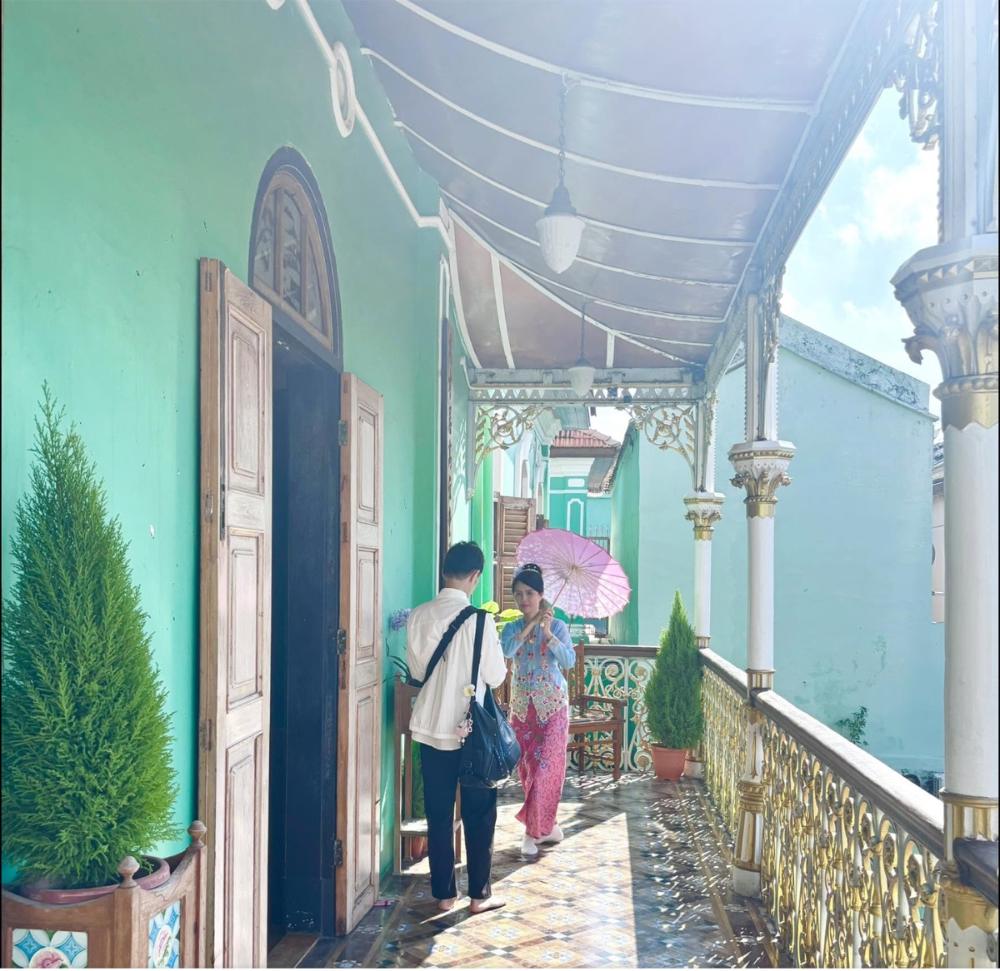
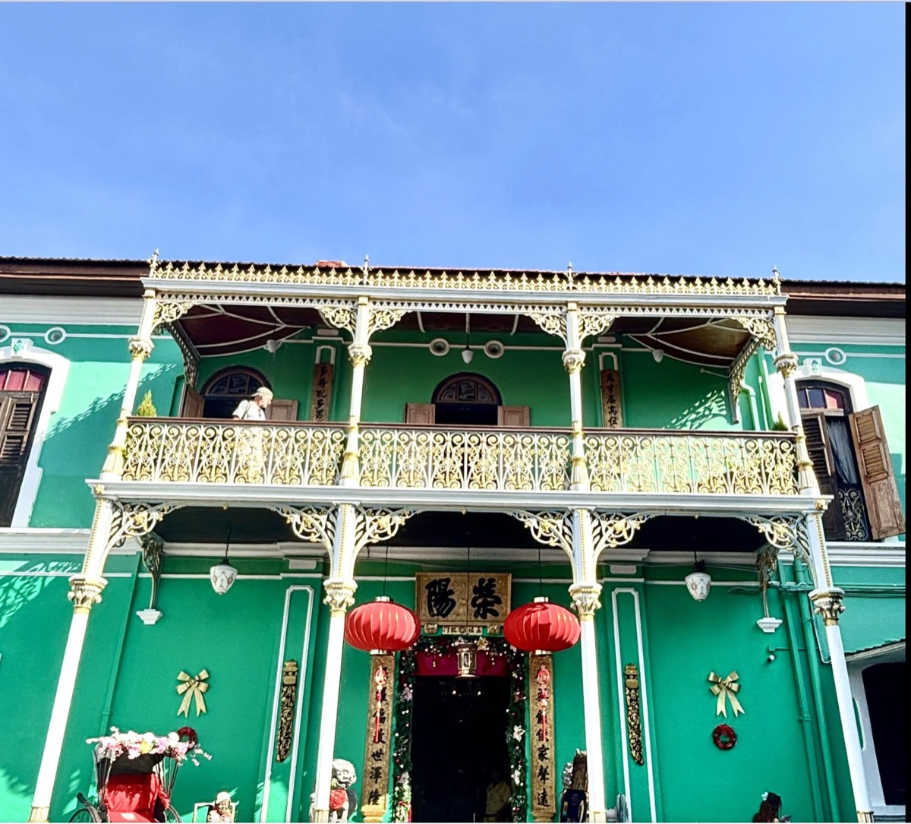

सिंगापुर और मलेशिया के मलक्का और पेनांग जैसी जगहों पर यूरोपीय — पुर्तगाली, डच और फिर अंग्रेज़ — व्यापारियों के कब्ज़े से पहले चीनी व्यापारियों का दबदबा था. 15वीं-17वीं शताब्दी में बीच कई सारे चीनी व्यापारियों ने इन इलाकों में खूब धन और शोहरत कमाए.
धीरे-धीरे वे वापस चीन जाने की बजाय स्थानीय मलय महिलाओं से शादी कर इधर ही बसने लगे. चीनी पुरुष और मलय महिलाओं की शादी से एक नए पेरानाकन समुदाय का उदय हुआ. इस पेरानाकन समुदाय में घर के सबसे बड़े पुरुष को बाबा और महिला को निउनिया/न्योनिया कहते हैं. नीचे तस्वीरों में पेनांग के एक ऐसे ही एक बाबा-न्युनिया का पुश्तैनी घर है जो अब बतौर म्यूज़ियम देखा जा सकता है.


तमाम बनावट-सजावट से इतर निउनीया शब्द या संबोधन ने मुझे यह घर देखने के लिए प्रेरित किया. यह संबोधन सुनते ही मुझे सबसे पहले अभिषेक की याद आई, फिर आचार्य हजारी प्रसाद द्विवेदी के बाणभट्ट और निपुणिका (निउनीया) की. दरअसल जेएनयू में उसी से लेकर मैंने 'बाणभट्ट की आत्मकथा' पढ़ी थी और फिर कई दिनों तक हम दोनों ही निउनिया के इश्क़ में रहे थे.
खैर, मलक्का और पेनांग जैसी व्यापारिक ठिकानों में पनपी यह पेरानाकन संस्कृति और खान-पान ही एक हद तक मलेशिया जैसे समावेशी देश की आत्मा है.
← Back to Travelling